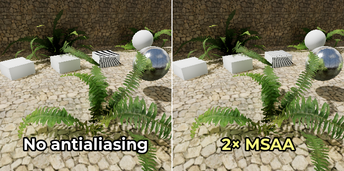
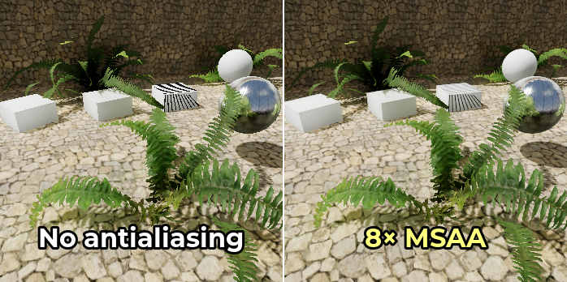
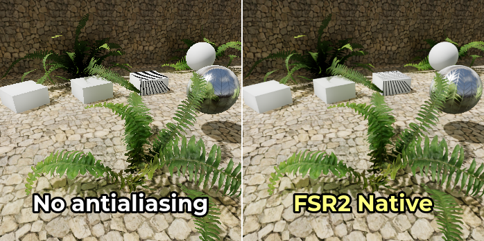

3D antialiasing
See also
Godot also supports antialiasing in 2D rendering. This is covered on the 2D antialiasing page.
Introduction
Due to their limited resolution, scenes rendered in 3D can exhibit aliasing artifacts. These artifacts commonly manifest as a "staircase" effect on surface edges (edge aliasing) and as flickering and/or sparkles on reflective surfaces (specular aliasing).
In the example below, you can notice how edges have a blocky appearance. The vegetation is also flickering in and out, and thin lines on top of the box have almost disappeared:

Image is scaled by 2× with nearest-neighbor filtering to make aliasing more noticeable.
To combat this, various antialiasing techniques can be used in Godot. These are detailed below.
See also
You can compare antialiasing algorithms in action using the 3D Antialiasing demo project.
Multisample antialiasing (MSAA)
This is available in all renderers.
This technique is the "historical" way of dealing with aliasing. MSAA is very effective on geometry edges (especially at higher levels). MSAA does not introduce any blurriness whatsoever.
MSAA is available in 3 levels: 2×, 4×, 8×. Higher levels are more effective at antialiasing edges, but are significantly more demanding. In games with modern visuals, sticking to 2× or 4× MSAA is highly recommended as 8× MSAA is usually too demanding.
The downside of MSAA is that it only operates on edges. This is because MSAA increases the number of coverage samples, but not the number of color samples. However, since the number of color samples did not increase, fragment shaders are still run for each pixel only once. Therefore, MSAA does not reduce transparency aliasing for materials using the Alpha Scissor transparency mode (1-bit transparency). MSAA is also ineffective on specular aliasing.
To mitigate aliasing on alpha scissor materials, alpha antialiasing (also called alpha to coverage) can be enabled on specific materials in the StandardMaterial3D or ORMMaterial3D properties. Alpha to coverage has a moderate performance cost, but it's effective at reducing aliasing on transparent materials without introducing any blurriness.
To make specular aliasing less noticeable, use the Screen-space roughness limiter, which is enabled by default.
MSAA can be enabled in the Project Settings by changing the value of the Rendering > Anti Aliasing > Quality > MSAA 3D setting. It's important to change the value of the MSAA 3D setting and not MSAA 2D, as these are entirely separate settings.
Comparison between no antialiasing (left) and various MSAA levels (right). Note that alpha antialiasing is not used here:



Temporal antialiasing (TAA)
This is only available in the Forward+ renderer, not the Mobile or Compatibility renderers.
Temporal antialiasing works by converging the result of previously rendered frames into a single, high-quality frame. This is a continuous process that works by jittering the position of all vertices in the scene every frame. This jittering is done to capture sub-pixel detail and should be unnoticeable except in extreme situations.
This technique is commonly used in modern games, as it provides the most effective form of antialiasing against specular aliasing and other shader-induced artifacts. TAA also provides full support for transparency antialiasing.
TAA introduces a small amount of blur when enabled in still scenes, but this blurring effect becomes more pronounced when the camera is moving. Another downside of TAA is that it can exhibit ghosting artifacts behind moving objects. Rendering at a higher framerate will allow TAA to converge faster, therefore making those ghosting artifacts less visible.
Temporal antialiasing can be enabled in the Project Settings by changing the value of the Rendering > Anti Aliasing > Quality > TAA setting.
Comparison between no antialiasing (left) and TAA (right):

AMD FidelityFX Super Resolution 2.2 (FSR2)
This is only available in the Forward+ renderer, not the Mobile or Compatibility renderers.
Since Godot 4.2, there is built-in support for AMD FidelityFX Super Resolution 2.2. This is an upscaling method compatible with all recent GPUs from any vendor. FSR2 is normally designed to improve performance by lowering the internal 3D rendering resolution, then upscaling to the output resolution.
However, unlike FSR1, FSR2 also provides temporal antialiasing. This means FSR2 can be used at native resolution for high-quality antialiasing, with the input resolution being equal to the output resolution. In this situation, enabling FSR2 will actually decrease performance, but it will significantly improve rendering quality.
Using FSR2 at native resolution is more demanding than using TAA at native resolution, so its use is only recommended if you have significant GPU headroom. On the bright side, FSR2 provides better antialiasing coverage with less blurriness compared to TAA, especially in motion.
Comparison between no antialiasing (left) and FSR2 at native resolution (right):

Note
By default, the FSR Sharpness project setting is set to 0.2 (higher
values result in less sharpening). For the purposes of comparison, FSR
sharpening has been disabled by setting it to 2.0 on the above screenshot.
Fast approximate antialiasing (FXAA)
This is only available in the Forward+ and Mobile renderers, not the Compatibility renderer.
Fast approximate antialiasing is a post-processing antialiasing solution. It is faster to run than any other antialiasing technique and also supports antialiasing transparency. However, since it lacks temporal information, it will not do much against specular aliasing.
This technique is still sometimes used in mobile games. However, on desktop platforms, FXAA generally fell out of fashion in favor of temporal antialiasing, which is much more effective against specular aliasing. Nonetheless, exposing FXAA as an in-game option may still be worthwhile for players with low-end GPUs.
FXAA introduces a moderate amount of blur when enabled (more than TAA when still, but less than TAA when the camera is moving).
FXAA can be enabled in the Project Settings by changing the value of the
Rendering > Anti Aliasing > Quality > Screen Space AA
setting to FXAA.
Comparison between no antialiasing (left) and FXAA (right):

Sub-pixel Morphological Antialiasing (SMAA 1x)
This is only available in the Forward+ and Mobile renderers, not the Compatibility renderer.
Sub-pixel Morphological Antialiasing is a post-processing antialiasing solution. It runs slightly slower than FXAA, but produces less blurriness. This is very helpful when the screen resolution is 1080p or below. Just like FXAA, SMAA 1x lacks temporal information and will therefore not do much against specular aliasing.
Use SMAA 1x if you can't afford MSAA, but find FXAA too blurry.
Combine it with TAA, or even FSR2, to maximize antialiasing at a higher GPU cost and some added blurriness. This is most beneficial in fast-moving scenes or just after a camera cut, especially at lower FPS.
SMAA 1x can be enabled in the Project Settings by changing the value of the
Rendering > Anti Aliasing > Quality > Screen Space AA
setting to SMAA.
Comparison between no antialiasing (left) and SMAA 1x (right):

Supersample antialiasing (SSAA)
This is available in all renderers.
Supersampling provides the highest quality of antialiasing possible, but it's also the most expensive. It works by shading every pixel in the scene multiple times. This allows SSAA to antialias edges, transparency and specular aliasing at the same time, without introducing potential ghosting artifacts.
The downside of SSAA is its extremely high cost. This cost generally makes SSAA difficult to use for game purposes, but you may still find supersampling useful for offline rendering.
Supersample antialiasing is performed by increasing the
Rendering > Scaling 3D > Scale
advanced project setting above 1.0 while ensuring
Rendering > Scaling 3D > Mode
is set to Bilinear (the default).
Since the scale factor is defined per-axis, a scale factor of 1.5 will result
in 2.25× SSAA while a scale factor of 2.0 will result in 4× SSAA. Since Godot
uses the hardware's own bilinear filtering to perform the downsampling, the result
will look crisper at integer scale factors (namely, 2.0).
Comparison between no antialiasing (left) and various SSAA levels (right):


Warning
Supersampling also has high video RAM requirements, since it needs to render in the target resolution then downscale to the window size. For example, displaying a project in 3840×2160 (4K resolution) with 4× SSAA will require rendering the scene in 7680×4320 (8K resolution), which is 4 times more pixels.
If you are using a high window size such as 4K, you may find that increasing the resolution scale past a certain value will cause a heavy slowdown (or even a crash) due to running out of VRAM.
Screen-space roughness limiter
This is only available in the Forward+ and Mobile renderers, not the Compatibility renderer.
This is not an edge antialiasing method, but it is a way of reducing specular aliasing in 3D.
The screen-space roughness limiter works best on detailed geometry. While it has an effect on roughness map rendering itself, its impact is limited there.
The screen-space roughness limiter is enabled by default; it doesn't require any manual setup. It has a small performance impact, so consider disabling it if your project isn't affected by specular aliasing much. You can disable it with the Rendering > Quality > Screen Space Filters > Screen Space Roughness Limiter project setting.
Texture roughness limiter on import
Like the screen-space roughness limiter, this is not an edge antialiasing method, but it is a way of reducing specular aliasing in 3D.
Roughness limiting on import works by specifying a normal map to use as a guide for limiting roughness. This is done by selecting the roughness map in the FileSystem dock, then going to the Import dock and setting Roughness > Mode to the color channel the roughness map is stored in (typically Green), then setting the path to the material's normal map. Remember to click Reimport at the bottom of the Import dock after setting the path to the normal map.
Since this processing occurs purely on import, it has no performance cost whatsoever. However, its visual impact is limited. Limiting roughness on import only helps reduce specular aliasing within textures, not the aliasing that occurs on geometry edges on detailed meshes.
Which antialiasing technique should I use?
There is no "one size fits all" antialiasing technique. Since antialiasing is often demanding on the GPU or can introduce unwanted blurriness, you'll want to add a setting to allow players to disable antialiasing.
For projects with a photorealistic art direction, TAA is generally the most suitable option. While TAA can introduce ghosting artifacts, there is no other technique that combats specular aliasing as well as TAA does. The screen-space roughness limiter helps a little, but is far less effective against specular aliasing overall. If you have spare GPU power, you can use FSR2 at native resolution for a better-looking form of temporal antialiasing compared to standard TAA.
For projects with a low amount of reflective surfaces (such as a cartoon artstyle), MSAA can work well. MSAA is also a good option if avoiding blurriness and temporal artifacts is important, such as in competitive games.
When targeting low-end platforms such as mobile or integrated graphics, FXAA is usually the only viable option. 2× MSAA may be usable in some circumstances, but higher MSAA levels are unlikely to run smoothly on mobile GPUs.
Godot allows using multiple antialiasing techniques at the same time. This is usually unnecessary, but it can provide better visuals on high-end GPUs or for non-real-time rendering. For example, to make moving edges look better when TAA is enabled, you can also enable MSAA at the same time.
Antialiasing comparison
Feature |
MSAA |
TAA |
FSR2 |
FXAA |
SMAA 1x |
SSAA |
SSRL |
|---|---|---|---|---|---|---|---|
Edge antialiasing |
🟢 Yes |
🟢 Yes |
🟢 Yes |
🟢 Yes |
🟢 Yes |
🟢 Yes |
🔴 No |
Specular antialiasing |
🟡 Some |
🟢 Yes |
🟢 Yes |
🟡 Some |
🟡 Some |
🟢 Yes |
🟢 Yes |
Transparency antialiasing |
🟡 Some [1] |
🟢 Yes [2] |
🟢 Yes [2] |
🟢 Yes |
🟢 Yes |
🟢 Yes |
🔴 No |
Added blur |
🟢 None |
🟡 Some |
🟡 Some |
🟡 Some |
🟢 Low |
🟡 Some [3] |
🟢 None |
Ghosting artifacts |
🟢 None |
🔴 Yes |
🔴 Yes |
🟢 None |
🟢 None |
🟢 None |
🟢 None |
Performance cost |
🟡 Medium |
🟡 Medium |
🔴 High |
🟢 Very Low |
🟢 Low |
🔴 Very High |
🟢 Low |
Forward+ |
✔️ Yes |
✔️ Yes |
✔️ Yes |
✔️ Yes |
✔️ Yes |
✔️ Yes |
✔️ Yes |
Mobile |
✔️ Yes |
❌ No |
❌ No |
✔️ Yes |
✔️ Yes |
✔️ Yes |
✔️ Yes |
Compatibility |
✔️ Yes |
❌ No |
❌ No |
❌ No |
❌ No |
✔️ Yes |
❌ No |